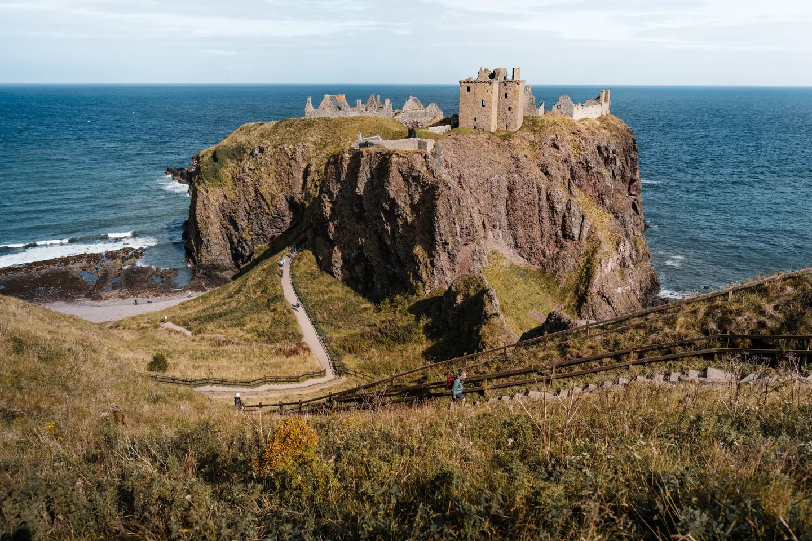
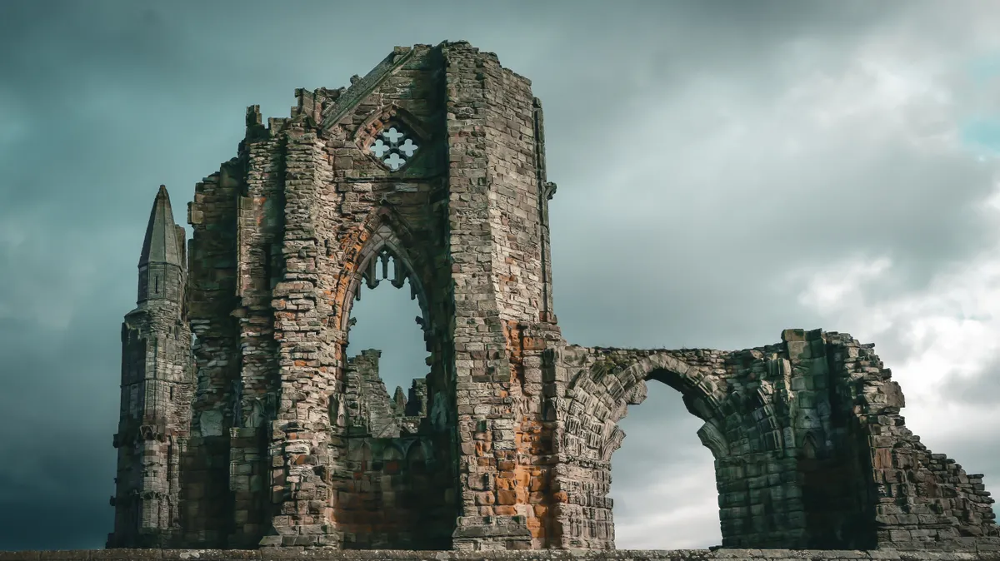
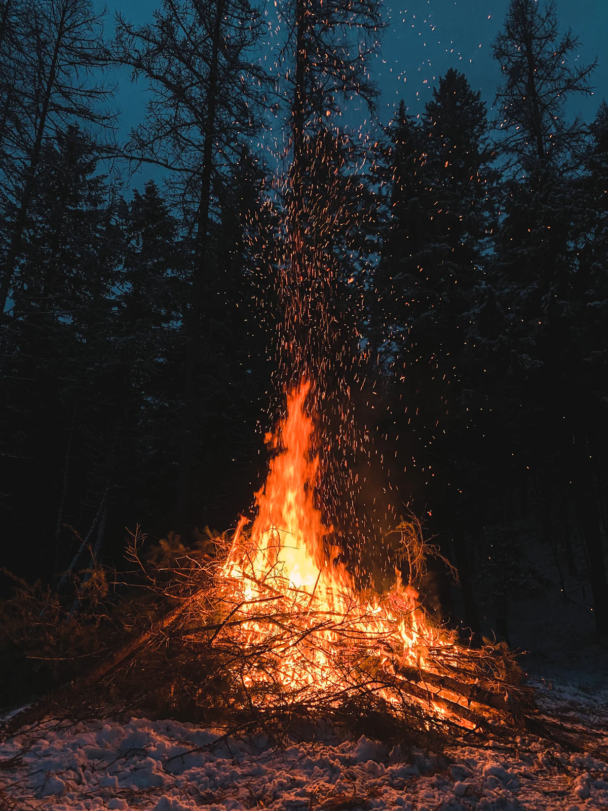
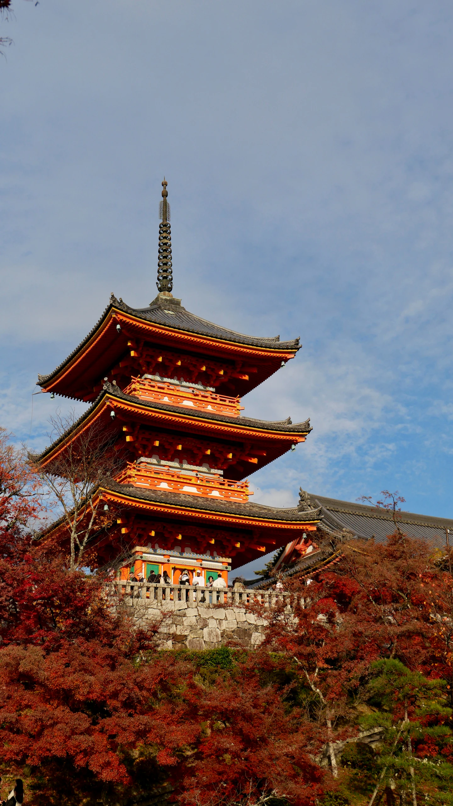
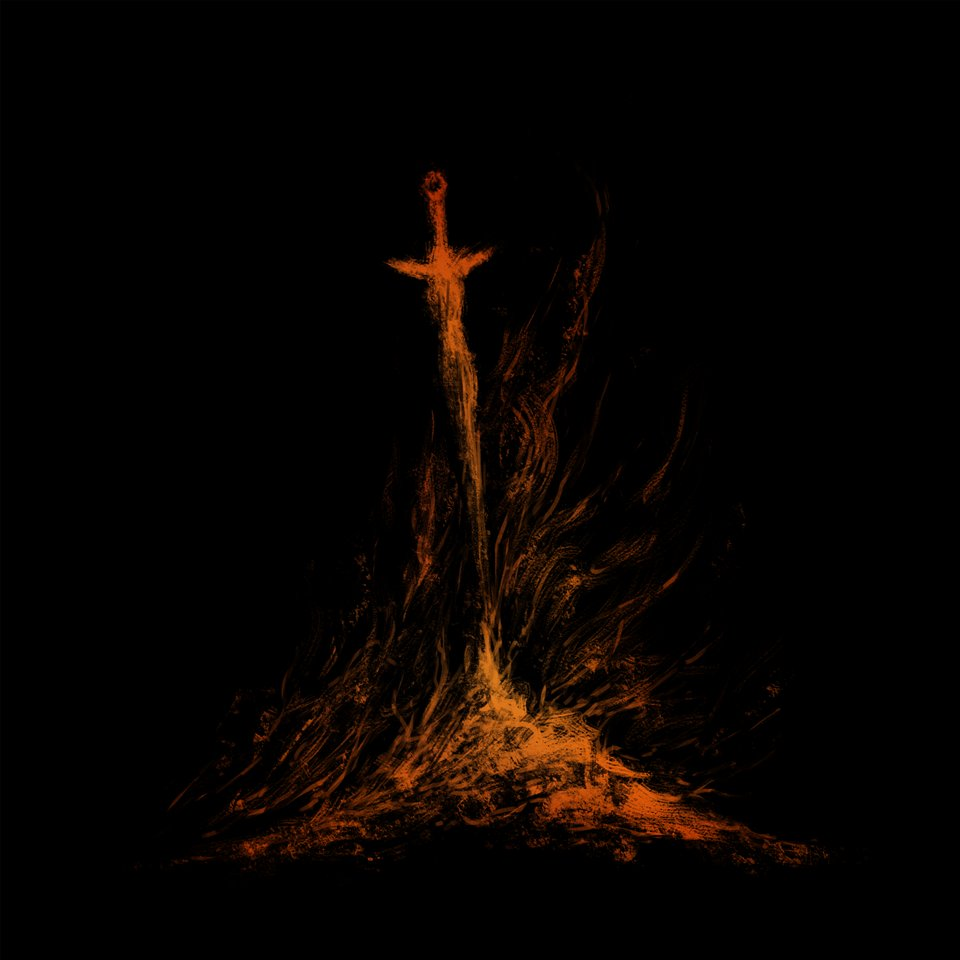
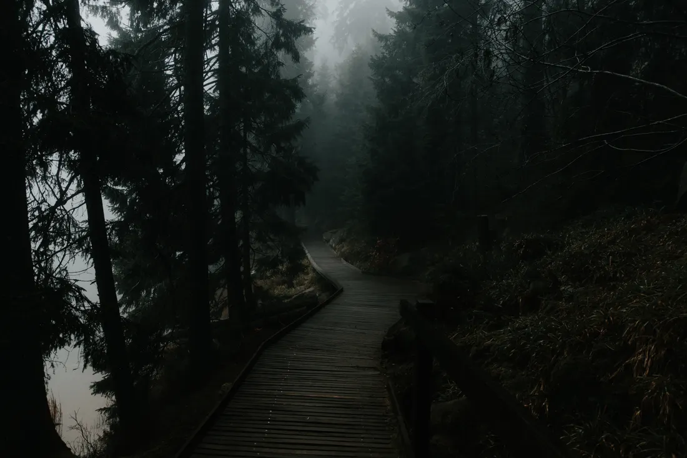

Open exploration
Elden Ring
The Lands Between gives you room to change course. If a fight stops you in your tracks, take Torrent into another region and return when you’re ready.
Explore Elden RingA FromSoftware fan archive
Four worlds shaped by ruin, wonder, and the will to try again.
Now viewing
The Lands Between
Explore the stories, maps, and encounters that give each world its character.
Choose the kind of challenge you want to take on.
Open exploration
The Lands Between gives you room to change course. If a fight stops you in your tracks, take Torrent into another region and return when you’re ready.
Explore Elden Ring
Relentless combat
Yharnam rewards quick decisions in close quarters. After taking a hit, Rally gives you a short window to recover lost health by striking back.
Explore Bloodborne
Deliberate combat
Work from bonfire to bonfire through the ruins of Lothric. Read each enemy’s attack, manage your stamina, and commit when a clear opening appears.
Explore Dark Souls III
Precision duels
Duels in Ashina turn on posture. Meet strikes with timed deflections and keep the pressure on until your opponent opens up to a deathblow.
Explore SekiroTravel through twelve scenes from the archive. Swipe or drag to browse, and select a scene to inspect the artwork.
 Ashina ReservoirSekiro
Ashina ReservoirSekiro
 Cerulean CoastElden Ring
Old YharnamBloodborne
Cerulean CoastElden Ring
Old YharnamBloodborne
 Irithyll of the Boreal ValleyDark Souls III
Fountainhead PalaceSekiro
Irithyll of the Boreal ValleyDark Souls III
Fountainhead PalaceSekiro
 Leyndell, Royal CapitalElden Ring
Leyndell, Royal CapitalElden Ring
 Moon PresenceBloodborne
Lothric CastleDark Souls III
Moon PresenceBloodborne
Lothric CastleDark Souls III
 Senpou TempleSekiro
Liurnia of the LakesElden Ring
Senpou TempleSekiro
Liurnia of the LakesElden Ring
 Hunter’s DreamBloodborne
Hunter’s DreamBloodborne
 Gael’s arenaDark Souls III
Gael’s arenaDark Souls III
From a fortress on a sea cliff to a fire in the snow, these photographs recall places and moments from the four games.

Elden Ring · Scotland
The sea cliffs recall Stormveil, where the approach is as imposing as the walls.

Bloodborne · England
Pointed arches and empty windows give these ruins something of Yharnam’s silhouette.

Dark Souls III
In Lothric, the glow of a bonfire means a chance to rest, refill Estus, and try again.

Sekiro · Japan
The red canopy and tiered roofs recall the climb to Senpou Temple.

A quiet place to gather your breath before the road turns dangerous again.
Find four marks tucked into the Archive and bring them here to kindle the fire.
0 of 4 marks found
Look for a diamond beside the name of the world currently in view.
A stray glimmer can give a lost Tarnished a direction to follow.
Look by the world selectorThe Hunt has an eye on you from the rooftops of Yharnam.
In Yharnam, a change in what you know can change what you see.
Look on the Bloodborne cardA single leaf caught on the edge of the silvergrass field.
A trace of Ashina still clings to the leaf.
Look on the Sekiro cardCheck the very end of the page for a spark the ash missed.
One ember is enough to bring light back to this chamber.
Look beside the site creditsWith motion on, move your pointer or tap to scatter embers throughout the Archive.
Each world gives its traveler a refuge. Resting lets you gather your strength while much of the world gets ready for your return.

The name comes from fans of Dark Souls and Bloodborne. It describes games where precision matters, the world tells its own story, and the way forward often needs to be earned.